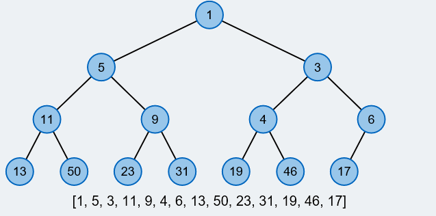

Binary Heaps
Binary Heaps


Beispiel eines Binary Heaps inkluisive Arraydarstellung
Die Binary Heap Datenstruktur
Ein Binary Heap ist eine Datenstruktur die eine Prioritätswarteschlange implementiert. Es ist die wohl bekannteste Art eines Heaps. Durch ihre einfache Implementierung und Arbeitsweise, wird sie oft in Einführungskursen für die Informatik oder die Algorithmik gelehrt.
Aufbau:
Ein Binary Heap sieht aus wie ein fast vollständiger Binärbaum, jedoch gilt für jeden Knoten, dass sein Vaterknoten kleiner/gleich und seine beiden Kinder (falls vorhanden) größer/gleich als der Knoten selbst sind.Durch die Eigenschaft, dass der Heap aussieht wie ein Binärbaum, ist es möglich den Heap in einem Array zu speichern, was sehr speichereffizient ist. Die theoretischen Laufzeiten sind verglichen mit anderen Heaps recht schlecht, in der Praxis überzeugt der Binary Heap dennoch durch seine Speichereffizienz, mithilfe derer der Binary Heap sehr gute praktische Laufzeiten erreicht.
Was möchtest Du zuerst machen?
Es wird empfohlen zuerst die Beschreibungen der Operationen zu lesen und erst anschließend den Heap zu testen. Dabei ist die Wirkungsweise der Operationen klarer und einfacher zu verstehen. Zusätzlich können bei dem Testen des Heaps "Beschreibungen" angeschaltet werden, wodurch jede Operation Schritt-für-Schritt animiert und beschrieben wird.
Heap.svg
Delete oder Decrease?Arraydarstellung:Führe eine Operation durch um die Arraydarstellung zu sehen. Legende
|
Hier kannst du mit verschiedenen Heaps (neu-)starten:
Wähle
Animationen und Beschreibungen:
Welche Operation möchtest Du durchführen?
Insert fügt ein Element in den Heap mit dem gewünschten Schlüssel ein. Gibst Du keinen Schlüssel ein bekommt das Element einen zufälligen Schlüssel.Delete-Min löscht das Element mit dem kleinsten Schlüssel aus dem Heap.
Build baut einen ganz neuen Heap auf. Der Momentane Heap wird verworfen und durch Deine Eingabe ersetzt. Deine Eingabe sollte folgende Form haben: Trenne die Schlüssel der Elemente mit einem Komma und ohne Leerzeichen. Machst du zwei Kommas ohne einer Zahl dazwischen, so wird ein Element mit einem zufälligen Schlüssel an dieser Stelle eingefügt. (Beispieleingabe: 14,3,9,0,,1,43)
[]
Um ein beliebiges Element zu löschen (Delete) oder den Schlüssel eines Elementes zu veringern (Decrease-Key) drücke auf den gewünschten Knoten.
Beachte, dass 31 die maximale Knotenanzahl ist.